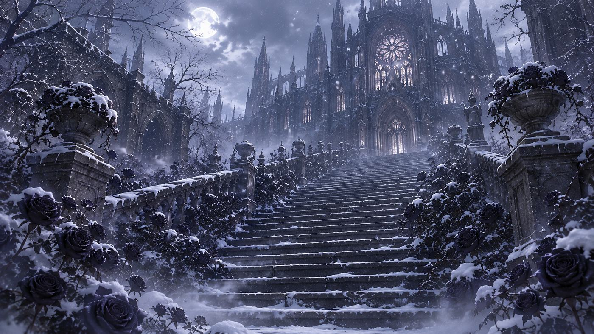
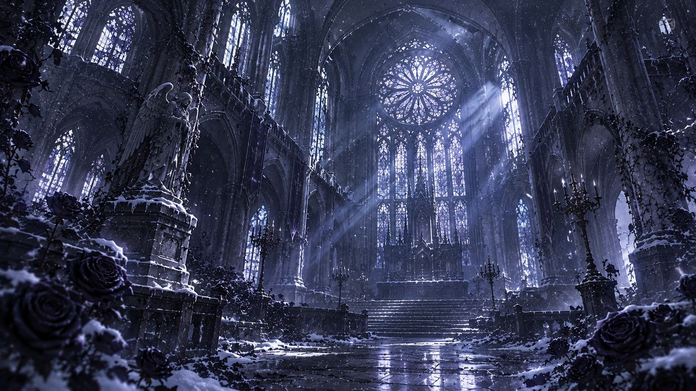
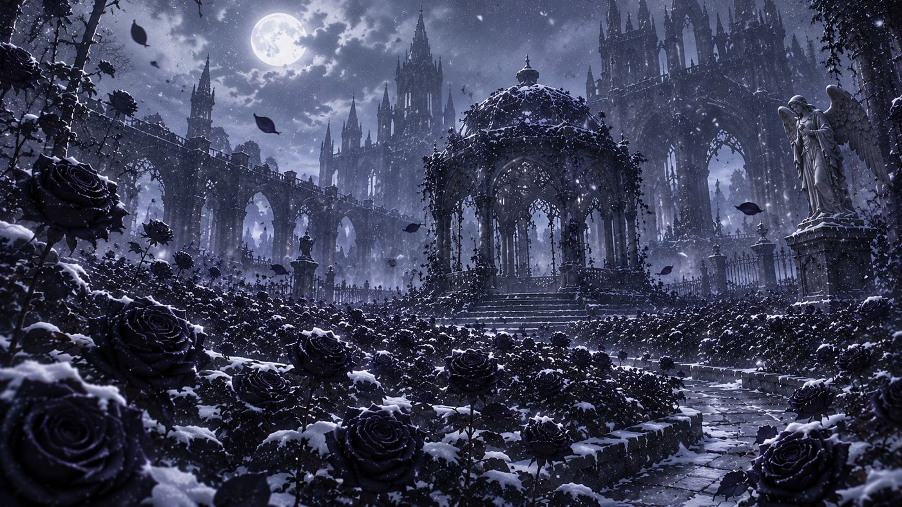
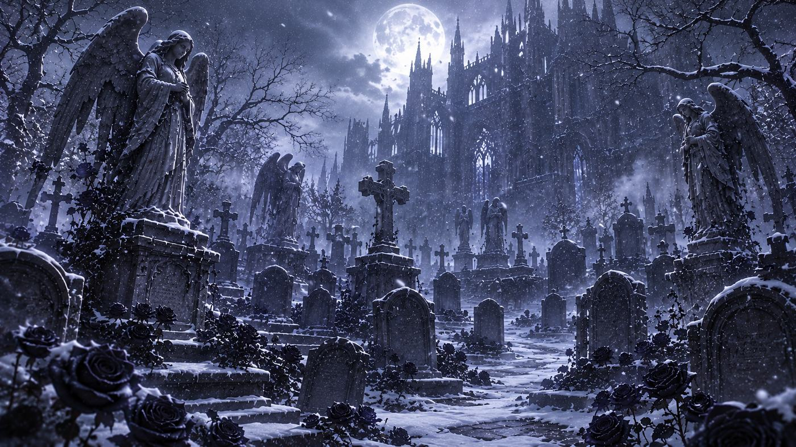
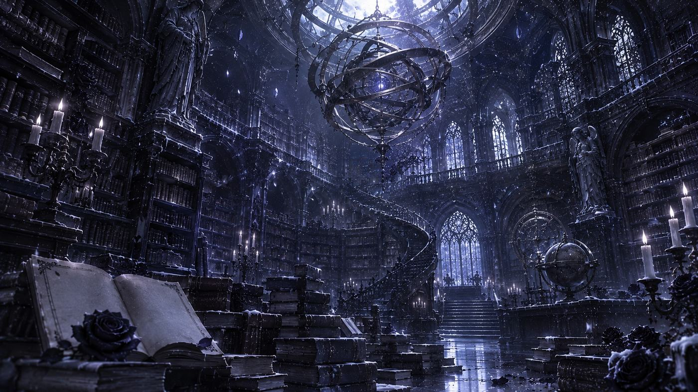
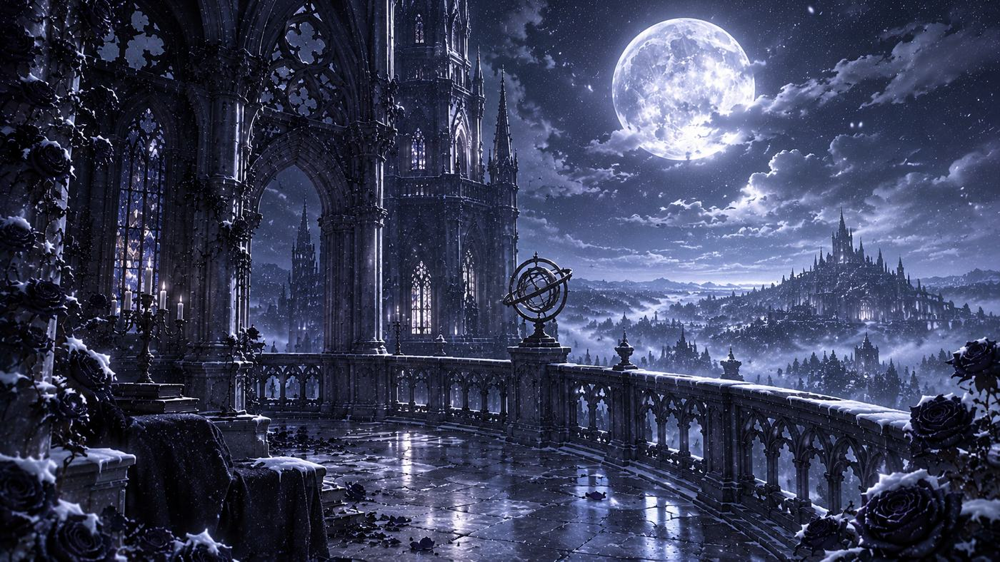

The Cathedral of Sleeping Roses
สถานที่ลึกลับระหว่างความฝันและความเป็นจริง
พื้นที่พิเศษ ใช้เวทมนตร์ได้
ไม่มีใครรู้ว่าวิหารถูกสร้างขึ้นเมื่อใด เหลือเพียงอาคารหินโบราณ สวนกุหลาบสีดำ และหิมะที่ตกไม่รู้จบ
วิหารกุหลาบนิทราไม่ปรากฏบนแผนที่ทั่วไป ไม่มีอาณาเขตแน่นอน และเครื่องมือบอกทิศธรรมดาไม่อาจชี้ตำแหน่งได้อย่างน่าเชื่อถือ
กล่าวกันว่ามันตั้งอยู่ตรงรอยต่อของโลกแห่งความฝันกับโลกจริง ฤดูกาลไม่เคยเปลี่ยน เวลาเคลื่อนช้า และความเงียบกลายเป็นส่วนหนึ่งของธรรมชาติ
| หัวข้อ | รายละเอียด |
|---|---|
| ประเภท | พื้นที่พิเศษ ดินแดนกึ่งความฝัน |
| ที่ตั้ง | ไม่ปรากฏบนแผนที่ อยู่ที่รอยต่อระหว่างความฝันกับความจริง |
| เวทมนตร์ | ใช้ได้ |
| ฤดูกาล | ฤดูหนาวตลอดกาล หิมะไม่ละลายตามธรรมชาติ |
| ท้องฟ้า | กลางคืนหรือพลบค่ำ ดวงจันทร์ใหญ่เหนือยอดวิหาร |
| แหล่งแสง | แสงจันทร์ แสงเทียน และแสงผ่านกระจกสี |
| พืชเด่น | กุหลาบสีดำ เถาวัลย์หนาม ต้นไม้ไร้ใบ |
| สถาปัตยกรรม | โกธิก หินเทาเข้มเกือบดำ ซากวิหารโบราณ |
| ท่าทีของที่นี่ | ไม่เป็นมิตรและไม่เป็นศัตรู เพียงคงอยู่ในความเงียบของตนเอง |
| สีประจำพื้นที่ | ขาวหิมะ, ดำกุหลาบ, เทาหิน, เงินจันทร์, น้ำเงินหม่น |
ความงดงาม ความสงบ และความโดดเดี่ยว อยู่ร่วมกันในที่เดียว
ยอดหอคอยสูงตั้งตระหง่านเหนือม่านหมอกและต้นไม้สีดำ กลีบกุหลาบที่ร่วงบนหิมะดูเหมือนเศษกระดาษที่ฉีกจากหนังสือ
ลมผ่านซุ้มประตู หิมะบนหลังคา กลีบกุหลาบเสียดสีกัน เสียงฝีเท้าสะท้อนในโถง แต่ไม่เคยมีเสียงระฆัง
หนาวสม่ำเสมอแต่ไม่รุนแรงจนอยู่ไม่ได้ หมอกขาวเทาลอยเหนือสวน ลานหิน และสุสาน
หิมะเย็น หินเก่า ไม้แห้ง กุหลาบดำมีกลิ่นคล้ายดอกไม้แห้งปนกระดาษเก่า หอสมุดมีกลิ่นหมึก สุสานมีกลิ่นดินเย็น
จันทร์สีเงินในที่โล่ง เทียนและตะเกียงตามทางเดิน เศษกระจกสีทอดแสงม่วง น้ำเงิน และแดงเข้มบนพื้นหิน
ไม่รุนแรง แต่แทรกในสิ่งธรรมดา เช่น กลีบกุหลาบทวนลม ประตูที่ดูใกล้กว่าจริง ทางเดินที่ทำให้รู้สึกว่าผ่านที่เดิมซ้ำ
เลือกสำรวจจุดไหนก่อนก็ได้ ไม่ต้องเรียงลำดับ
The Sleeping Stairway

ป้ายกำกับ: ทางเข้าหลัก
บันไดหินขนาดใหญ่ทอดขึ้นสู่เขตวิหารหลัก มีซุ้มประตูโกธิกตรงทางขึ้น สองข้างเต็มไปด้วยกุหลาบสีดำที่เลื้อยพันราวหินและเสาเก่าแก่
หิมะปกคลุมพื้นบันไดเป็นบางส่วน จึงต้องระวังขณะเดิน
สิ่งที่อาจพบ
The Silent Cathedral

ป้ายกำกับ: โถงหลัก
โถงใหญ่ที่มีเพดานสูงและเสาหินเรียงยาว หน้าต่างกระจกสีทอดตัวขึ้นเกือบถึงเพดาน แสงจันทร์ลอดผ่านลงมาเป็นลวดลายหลากสีบนพื้นหิน
ภายในมีม้านั่งไม้เก่า แท่นพิธี และรูปสลักเทวทูตตามแนวเสา ไม่มีเสียงระฆังหรือเสียงสวดมนต์เหลืออยู่ แม้จะมีหอระฆังอยู่เหนืออาคาร
สิ่งที่อาจพบ
The Black Rose Garden

ป้ายกำกับ: เหมาะแก่การพักผ่อน
สวนกว้างที่เต็มไปด้วยกุหลาบสีดำสนิท ล้อมศาลาโกธิกกลางสวน และเชื่อมกับทางเดินหินหลายสาย กุหลาบยังบานแม้ท่ามกลางหิมะ
มีม้านั่งหินตามมุมสวน เหมาะแก่การพักผ่อน อ่านหนังสือ หรือนั่งสังเกตบรรยากาศ
สิ่งที่อาจพบ
The Nameless Cemetery

ป้ายกำกับ: หลังวิหาร
สุสานเก่าแก่ด้านหลังวิหาร ป้ายหลุมศพเรียงรายท่ามกลางหิมะ แต่ไม่มีชื่อผู้ตายสลักอยู่เลยสักป้าย
รูปปั้นเทวทูตหินยืนเฝ้าตามจุดต่าง ๆ บางรูปมีปีกสมบูรณ์ บางรูปเหลือเพียงโครงปีกที่แตกหัก
สิ่งที่อาจพบ
The Library of Slumber

ป้ายกำกับ: ห้องสมุดใต้ดิน · เหมาะแก่การค้นคว้า
ห้องสมุดใต้ดินขนาดใหญ่ ชั้นไม้สูงจรดเพดานเต็มไปด้วยหนังสือเก่า มีบันไดวนและระเบียงเชื่อมแต่ละชั้น ใจกลางห้องมีโต๊ะอ่านหนังสือขนาดใหญ่ พร้อมโคมไฟและเก้าอี้เก่า
หนังสือบางเล่มบันทึกเรื่องที่ไม่มีใครจำได้ บางเล่มมีเพียงชื่อผู้เขียนกับหน้าว่าง และบางเล่มมีข้อความที่ดูเหมือนเปลี่ยนไปเมื่อกลับมาอ่านอีกครั้ง
สิ่งที่อาจพบ
The Moonlit Tower

ป้ายกำกับ: จุดชมวิว · เงียบสงบที่สุด
หอคอยที่สูงที่สุดของวิหาร มีบันไดวนขึ้นสู่ระเบียงเปิดโล่ง มองเห็นทั้งสวนกุหลาบ สุสาน แนวป่า และภูมิประเทศที่อยู่ไกลออกไป
ราวหินแกะสลักและเสาโกธิกประดับเถากุหลาบ แสงจันทร์ส่องลงบนพื้นหินที่มักมีหิมะบาง ๆ
สิ่งที่อาจพบ
The Hall of Silent Mirrors
ป้ายกำกับ: ห้องโถงยาว
ห้องโถงยาวที่มีกระจกโบราณติดตามผนังทั้งสองด้าน กรอบทำจากโลหะสีเงินหม่น แกะสลักลายกุหลาบตามขอบ
กระจกส่วนใหญ่สะท้อนภาพตามปกติ แต่บางบานอาจสะท้อนรายละเอียดที่ต่างออกไป เช่น แสงไฟที่ไม่มีอยู่จริง หรือเงาของวัตถุที่ไม่ปรากฏในห้อง
สิ่งที่อาจพบ
The Frozen Clock Chamber
ป้ายกำกับ: ห้องเก็บของเก่า
ห้องเก็บนาฬิกาเก่าหลายแบบ ทั้งนาฬิกาตั้งพื้น นาฬิกาแขวน และนาฬิกากลไกขนาดใหญ่ บางเรือนหยุดที่เที่ยงคืน บางเรือนหยุดในเวลาอื่นโดยไม่มีรูปแบบร่วมกัน
เสียงกลไกบางส่วนยังดังเป็นระยะ แม้ลูกตุ้มจะหยุดเคลื่อนไหวไปแล้ว
สิ่งที่อาจพบ
The Angel's Gallery
ป้ายกำกับ: ลมแรงกว่าที่อื่นเล็กน้อย
ระเบียงหินที่เชื่อมกับส่วนบนของมหาวิหาร มีรูปปั้นเทวทูตเรียงตามแนวกำแพง บางรูปมองลงสู่สวน บางรูปก้มหน้าประสานมือราวกับภาวนา
หิมะมักเกาะตามปีกและไหล่ของรูปปั้น และมองเห็นยอดหอคอยได้ชัดจากมุมใกล้
สิ่งที่อาจพบ
The Lightless Crypt
ป้ายกำกับ: ต้องผ่านการพิจารณาของ GM
พื้นที่ใต้ส่วนเก่าของวิหาร มีทางเดินหินแคบและประตูเหล็กเก่าหลายบาน บางห้องมีชั้นเก็บของและกล่องไม้ที่ถูกทิ้งไว้นาน
ภายในมืดกว่าที่อื่นอย่างเห็นได้ชัด แสงจากภายนอกแทบส่องไม่ถึง ผนังบางส่วนมีสัญลักษณ์และรอยสลักที่ยังไม่รู้ความหมาย
สิ่งที่อาจพบ
ข่าวลือยังไม่มีหลักฐานยืนยัน อาจเป็นเพียงเรื่องเล่าจากบรรยากาศของสถานที่
มีคนกล่าวว่า หากเดินขึ้นบันไดแห่งการหลับใหลในช่วงที่หิมะตกหนัก จะพบรอยเท้าอีกคู่เดินอยู่ข้าง ๆ แม้จะไม่มีใครเดินตามมา
บางคนเคยเห็นแสงไฟในหน้าต่างของหอสมุดนิทรา ทั้งที่อาคารส่วนนั้นถูกปิดตายมานานแล้ว
ว่ากันว่ากุหลาบดำในสวนจะไม่ร่วงพร้อมกันสองดอก หากมีใครเด็ดไปหนึ่งดอก ดอกอื่นจะยังอยู่บนกิ่งเสมอ
ผู้ที่เข้าไปในห้องโถงกระจกเงาอาจพบเงาสะท้อนของตนกำลังยิ้ม ทั้งที่เจ้าตัวไม่ได้ยิ้มเลย
มีผู้พบว่ารูปปั้นเทวทูตในสุสานเปลี่ยนท่าทางเล็กน้อยเมื่อกลับมาเยือนอีกครั้ง แต่ไม่มีใครยืนยันได้ว่าเดิมมันอยู่ท่าไหน
บางคืนมีเสียงระฆังดังจากหอคอยแห่งดวงจันทร์ แม้จะไม่มีใครเคยพบระฆังที่ยังสมบูรณ์
มีหนังสือเล่มหนึ่งในหอสมุดนิทราที่ไม่มีชื่อผู้เขียน แต่บนปกมีชื่อของผู้ที่กำลังอ่านมันอยู่
บางคนเชื่อว่า หากนั่งในสวนกุหลาบสีดำจนถึงรุ่งเช้า จะพบว่าหิมะรอบตัวไม่เคยมีรอยเท้าของตนเอง
เป็นเพียงบรรยากาศประจำพื้นที่ ไม่ถือเป็นหลักฐานว่ามีสิ่งมีชีวิตหรือวัตถุพิเศษซ่อนอยู่ และผู้เล่นไม่สามารถจับหรือครอบครองได้โดยอัตโนมัติ
ใช้เวทมนตร์ตามความเหมาะสมของตัวละคร และเลือกเส้นทางที่อยากเดินได้อย่างอิสระ
ไม่ใช่ดินแดนแห่งความตาย ไม่ใช่สรวงสวรรค์ และไม่ใช่สถานที่ที่สร้างขึ้นเพื่อกักขังใคร
หิมะยังตกบนหลังคา กุหลาบดำยังบานในสวน แสงจันทร์ยังส่องผ่านกระจกสีลงบนพื้นหิน ไม่มีใครเรียกร้องให้ที่นี่ต้องเปลี่ยนแปลง
บางคนมาเพื่อค้นหาความลับ แต่สำหรับบางคน ที่นี่อาจเป็นที่ที่ไม่จำเป็นต้องค้นหาอะไรเลย
The Cathedral of Sleeping Roses — Where Silence Never Sleeps.
วิหารกุหลาบนิทรา สถานที่ซึ่งความเงียบไม่เคยหลับใหล